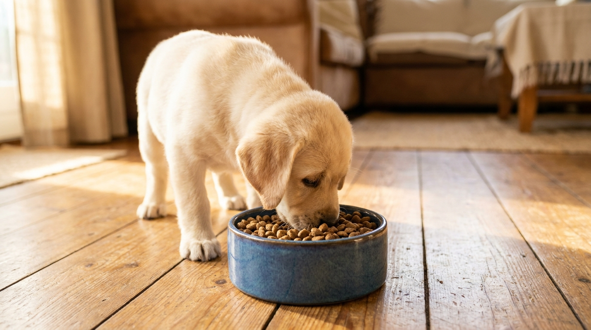

Первый корм для щенка: как выбрать, чем кормить в 2, 3 и 6 месяцев

24 мая 2026 · 8 минут чтения · Питание · Собаки
Неправильный корм в первые месяцы жизни — и щенок вырастает с проблемами суставов, шерсти или ЖКТ, которые потом не лечатся, а только контролируются. Правильный — закладывает здоровье на 10-15 лет вперёд. Разница в знании трёх параметров состава и понимании, что меняется с возрастом.
Почему щенку нельзя давать корм для взрослых собак
Щенок — не маленькая взрослая собака. У него принципиально другая физиология питания:
- Белок: щенку нужно 22-28% протеина (DM-basis), взрослой собаке — 18-22%. Белок нужен для роста мышц и органов.
- Кальций и фосфор: строго сбалансированное соотношение Ca:P = 1,2:1 — 1,8:1. Избыток кальция у крупных пород вызывает нарушения роста костей (остеохондроз).
- Калорийность: щенок потребляет вдвое больше энергии на кг массы, чем взрослая собака. Порции пересчитываются каждые 2-4 недели.
- Размер гранул: у малышей маленькие зубы и слабые челюсти — гранулы для крупных взрослых собак они глотают целиком, не жуя.
Корм с пометкой «для щенков» или «Puppy» или «Junior» — не маркетинг, а соответствие другому стандарту питательной ценности.
Как кормить щенка в 1,5-2 месяца (после отъёма)
Большинство щенков попадают к новым хозяевам в возрасте 1,5-2 месяца, когда их уже отняли от матери. В этот период:
- Желудок маленький — 4-5 приёмов пищи в день небольшими порциями.
- Оптимально первые 1-2 недели кормить тем же кормом, что давал заводчик. Резкая смена вызывает расстройство ЖКТ.
- Если корм нужно менять — постепенно, 7-10 дней: 25% нового + 75% старого → 50/50 → 75/25 → 100% нового.
Влажный корм или специализированные паштеты для щенков — хорошее начало. Если выбран сухой корм — размачивать в тёплой воде до мягкости первые 3-4 недели, пока идёт смена зубов.
2-4 месяца: переход на сухой корм и схема кормления
К 2,5-3 месяцам большинство щенков готовы к сухому корму без размачивания. Количество кормлений:
- До 3 месяцев: 4-5 раз в день.
- 3-6 месяцев: 3-4 раза в день.
- 6-12 месяцев (мелкие породы): 2-3 раза в день.
- 6-18 месяцев (крупные породы): 3 раза в день до 12 месяцев, затем 2 раза.
Размер порции — всегда по инструкции на упаковке корма, по текущему весу щенка. Это не советы «на глаз», а рассчитанная норма. Контролировать: тело щенка должно быть слегка рельефным (рёбра прощупываются, но не видны).
Как читать состав корма: три параметра, которые решают всё
На большинстве упаковок — состав на русском языке. Смотрите:
1. Первый ингредиент. Должно быть мясо или мясная мука конкретного вида (курица, индейка, говядина, лосось). Если первый ингредиент — «зерновые» или «пшеница», это корм с низким реальным содержанием белка, остальное — маркетинг.
2. Содержание белка (протеин). На упаковке — как «сырой протеин». Для щенков: минимум 22%, лучше 26-30%. Для гигантских пород (немецкая овчарка, мастиф) — умеренно, 22-25%, так как избыток белка при избытке кальция ускоряет рост скелета быстрее, чем связки и суставы успевают «дозреть».
3. Отсутствие красителей и консервантов. BHA, BHT, этоксиквин в составе — ищите корм без них. Натуральные консерванты: токоферолы (витамин E), лимонная кислота.
Сухой корм, влажный или натуралка: что выбрать
Сухой корм (кибл) — наиболее удобный и сбалансированный вариант. Главные плюсы: стабильный состав, не портится, механически очищает зубы. Минус: некоторые собаки плохо переносят зерновые наполнители.
Влажный корм (консервы, паштеты) — выше влажность (хорошо для почек), лучше поедаемость у привередливых щенков. Минус: дороже на объём питательных веществ, хуже для зубного камня, быстро портится в миске.
Натуральное питание (BARF — Biologically Appropriate Raw Food) — сырое мясо, кости, субпродукты, овощи. Требует знаний, точного расчёта КБЖУ, регулярных анализов. Для новых хозяев без опыта — не рекомендуется без консультации ветеринара-нутрициолога.
Смешанное кормление — сухой корм как основа + влажный как добавка до 30% от суточного объёма. Работает хорошо, если оба корма одной линейки или одного класса.
Классы корма: что стоит за ценой
- Эконом (до 150 ₽/кг): основа — зерновые и побочные продукты переработки мяса. Не запрещено, но качество белка и его усвояемость ниже. Для длительного кормления щенка — не оптимально.
- Средний класс (150-500 ₽/кг): мясо как первый ингредиент, лучший баланс. Хорошее соотношение цена/качество для большинства пород.
- Премиум и суперпремиум (500-1500 ₽/кг): один источник белка, беззерновые или с пониженным содержанием зерна, дополнительные нутриенты. Для аллергичных щенков и пород с чувствительным ЖКТ.
- Холистик (1000+ ₽/кг): максимальная чистота состава. Не всегда оправдан — зависит от состояния конкретной собаки.
Не знаете, подходит ли выбранный корм щенку? Опишите состав и реакцию собаки в AnimaLife vet-AI — дадим первичную оценку без записи к врачу.
Спросить vet-AI → ·
Открыть в MAX →
Особенности кормления крупных и гигантских пород
Немецкие овчарки, лабрадоры, голдены, мастифы, сенбернары — для них кормление в щенячий период критичнее всего. Быстрый рост скелета при избытке кальция и фосфора вызывает паностеит, дисплазию, остеохондроз — болезни, которые потом требуют дорогостоящего лечения всю жизнь.
- Выбирайте корм с пометкой «для крупных пород» или «Large Breed Puppy» — в нём специально снижено содержание кальция.
- Не давайте дополнительный кальций (кефир, творог в больших количествах, добавки) без анализа — это ошибка, которую допускают многие новые хозяева, считая, что «молочное полезно».
- Контролируйте скорость роста: щенки крупных пород должны расти медленно. Слишком быстрый набор массы — стресс для суставов.
Переход на взрослый корм: когда и как
Переходить на корм для взрослых собак нужно, когда щенок достиг 80-90% взрослого размера:
- Мелкие породы (до 10 кг взрослый вес): 8-10 месяцев.
- Средние породы (10-25 кг): 12 месяцев.
- Крупные породы (25-45 кг): 15-18 месяцев.
- Гигантские породы (45+ кг): 18-24 месяца.
Переход — постепенный, 10-14 дней, по той же схеме: четверть нового корма в неделю. Резкий переход = диарея и расстройство кишечника даже у здоровых собак.
Чего категорически нельзя давать щенку
- Кости (трубчатые, варёные) — осколки пробивают стенку кишечника. Сырые мягкие хрящевые кости — в рамках BARF под контролем.
- Сладкое и выпечка — не перевариваются правильно, вызывают брожение, сахарный диабет в перспективе.
- Лук, чеснок, виноград, изюм, шоколад — токсичны для собак.
- Еда со стола — соль, специи, лук в составе большинства блюд. Каждая «угощалка» со стола — риск.
- Коровье молоко — у взрослых щенков нет лактазы, вызывает диарею.
← Все статьи · Открыть AnimaLife в Telegram · RSS